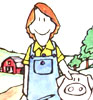
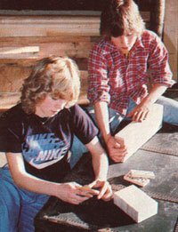
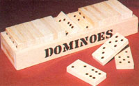
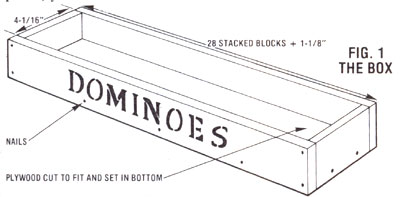
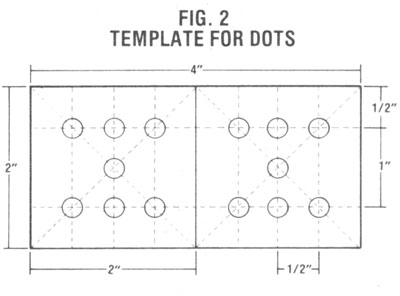
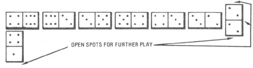

MOTHER feels strongly that youths can be creative "doers"; working toward more ecological and self-reliant lifestyles ... whether their tasks be raising chickens on a farm or maintaining rooftop container gardens in the city. To support the endeavors of our often overlooked "underage" citizens, we're glad to publish well-written articles from younger children and teenagers concerning protects they've undertaken. However, we recommend that all young authors query (that is, send us a letter telling about the story you'd like to do) before writing a full article. Address inquiries to Mother's Children, THE Mother Earth News (restricted) "', 105 Stoney Mountain Road, Hendersonville, North Carolina 28791.
Working together, Mona and Matt Rodgers can finish all the cutting . . . sanding ... and "dotting" required to make a beautiful wooden domino set in about three hours. Although the dominoes were originally fashioned for children, the games make great holiday gifts for people of all ages ... and-at $15 apiece-have proved to be moneymakers for this Youth-run business!
A while back, the two of us (we're brother and sister) were faced with a 4-H child development project that required us to design a toy for children aged three to six. The plaything was supposed to be both educational and made to last . . . and it was not supposed to have sharp edges, or removable parts or paint (which youngsters might chew or swallow).
So to get a few ideas about what we might be able to do, we looked at toy store items and graded them for safety. We both especially liked a set of giant wooden dominoes, but the game pieces had painted-on dots and sharp screws through their centers. On top of that, they weren't even sanded! The toys were practically dangerous . . . and cost $17.95, to boot!
Still, we knew that the game of dominoes is fun and can provide an excellent way to teach numbers to little children, so we designed our own sets with safety and durability in mind. And it turned out that people of all ages enjoy our dominoes! Matt even entered his best set in the county fair and won a championship ribbon. (He went on to take the Reserve Champion prize at the Oregon State Fair, too.) Then friends began placing orders for sets to give away as Christmas presents, and we found ourselves in the wooden domino business!
We kept our costs low by using scrap lumber ($5.00 worth of wood seconds should be enough to produce a set). Then we invested $1.00 in a garage sale woodburner, gathered the remaining necessary supplies around the house, and used our dad's tools. Each set takes us about three hours to makewith both of us working together-and sells for $15. Altogether we've sold ten sets, for a total income of $150, and given three away as presents.
SUPPLIES AND TOOLS
You can make your own dominoes for selling or giving, too. First, you'll have to assemble these supplies: one 5" X 16" piece of 3/4" plywood (for the game box's bottom) . . . 16 feet of surfaced four sides (S4S) 9/16" X 2" pine stock (you can rip an 8-foot section of S4S 9/16" X 4-1/4" pine) . . . eighteen 1" finishing nails . . . white glue . . . and wood putty.
You'll also need the following tools (we found that power equipment will really make the project go faster . . . but you could certainly get the job done by using hand tools): a saw (table, radial arm, portable power, or hand) . . . a sander (vibrating or hand) . . . a woodburning tool (with round and straight heads for dots and lines) . . . a hole punch and cardboard (for your template) . . . sandpaper . . . measuring tape . . . a pencil . . . a brown permanent marker . . . and a 1 " alphabet stencil.
ACCURACY COUNTS
Before you make any cuts, you'll have to sand all your stock. (We probably spend more time on this task than most people would, because we're used to showing our work to 4-H judges who grade high for "super-sanding" . . . but smoothing is essential to make youre toys safe.) Sand all four flat sides of the long stock (don't bother about the edges yet). Always be sure to work along the lengthwise grain of the wood, and to start by using coarse sandpaper, followed with finer finishing sheets. If you're smoothing by hand, wrap the paper around a block of wood when sanding flat surfaces.
Once you've finished rubbing, you're ready to cut 34 blocks (each 4" long) from the pine stock for your dominoes. (Actually, you'll need only 28 pieces to complete a set, but we recommend making extras in case you goof later with the woodburner . . . like we did on our first few tries!) It's important to be accurate in your measurements. If you're using a radial arm saw, you can insure uniformity by nailing a block of scrap in place exactly four inches from your saw blade to serve as a "stop". On the other hand, if you're using a portable power or hand saw, you'll have to mark one 4" section and cut it off before you mark the next . . . in order to allow space for the width of the saw blade between dominoes.
After you've cut the blocks, you can make the box they'll be stored in. Lay 28 domino pieces side by side like a big deck of cards turned on its edge. Now, measure-carefully!-the length of this row and add 1-1/8" (for the extra board space needed at the ends). Then cut two pieces of pine stock, each of this length, for the sides of the box. And cut two more pieces, each 4-1/16" long, to use as the ends (the extra 1/l6" in width makes it easier to put the 4" dominoes in the box).
At this point you can glue, assemble, and nail the frame together, as shown in Fig. 1. Then use the four-sided structure as a guide to draw the exact size of the plywood piece that will fit inside of it to serve as the bottom. Cut this component and lay it-best side up-recessed in the box frame and flush with the bottom of the sides. Glue and nail it in place, then fill the nail holes with wood putty and set the whole thing aside to dry while you "decorate" the dominoes.
DOT TO DOT
To produce the vicelike patterns of spots on your domino pieces, you'll need to make a medium-weight cardboard tem plate as shown in Fig. 2 (a piece from an old shoe box works fine for this). Carefully mark the spots for the 14 holes and use a hole punch to poke them out. Now, with a pencil, mark the 28 blocks with the correct number combinations: 6-6, 6-5, 6-4, 6-3, 6-2, 6-1, 5-5, 5-4, 5-3, 5-2, 5-1, 4-4, 4-3, 4-2, 4-1, 3-3, 3-2, 3-1, 2-2, 2-1, 1-1, 6-0, 5-0, 4-0, 3-0, 2-0, 1-0, 0-0 ("0" means leave that side blank).
You should also cut an extra piece of cardboard that's exactly 2" X 2". This can then be placed at one end of each domino and used to mark the centerlines with a pencil.
Now, you're ready to plug in your woodburner and "brand" all 28 centerlines and 168 dots. This task does get a bit monotonous (especially when you're mass-producing ten sets!), so the two of us always switch back and forth from burning lines to burning dots.
FINISHING TOUCHES
Remember how sanding the flat sides of your stock was your first task? Well, now you've come to your final steps (thought you'd never get done, huh?), and one of them is smoothing, too! Use the fine sandpaper, without wrapping it around a block, to lightly handsand the edges of each domino and the box so that no rough spots or splinters remain.
Next, pencil the letters of the word DOMINOES on one long side of your box, using the 1" stencil. Then go back over the word with a brown marking pen. The color will blend into the wood to produce a stained effect.
Finally, place your dominoes in their box . . . admire your handicraft . . . clean up your workshop . . . and challenge the nearest person to a game of Double Sixes (see the rules below).
EDITOR'S NOTE: If dressed pine in the specified dimensions is not available from your local lumber merchant, yon might try 1/2"thick boards (soft- or hardwood) and adjust the box length accordingly . . . or simply use standard lumber, being extra sure to do a thorough sanding job.
DOUBLE SIX DOMINOES
To start this two- to four-player game, place all dominoes face down. Each person draws five blocks and sets them up so no one else can see them. The person with the highest double domino goes first by setting it down on the playing area. (If no one has any doubles, return all the blocks to the drawing pile and start again.)
The play rotates clockwise, and the second player must match one of his or her dominoes to one end-or side-of the starting double block. The next player may then match the end of this second piece or play on the double's other end. Only one domino may be played at each turn, and they're all placed lengthwise . . . except for additional doubles, which may be set at right angles as shown in the drawing (you can play off the middle or ends of a double).
If a player can't match any open spots with one of his or her dominoes, that person must draw from the extra pile until he or she finds one to play. (If you draw the last free domino and still can't play, you have to pass until your next turn.)
The game continues until somebody uses all his or her dominoes or until no one can play. The player with no pieces left, or-if everybody has some-with the least total number of dots left, wins the round. That person scores the total number of dots remaining with all the other players minus any dots he or she has left. The first person to reach 100 points wins the game (this can take quite a few rounds to accomplish, too).
EDITOR'S NOTE: Rules for a slightly more advanced domino game appeared in "Try the Domino Cabin-Fever Cure", MOTHER NO. 55, page 120.
|
 |
|
 |
|
 |
 |
 |
|
 |
|
|